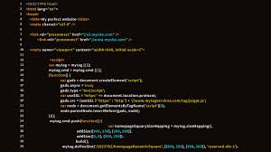
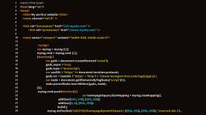

A Relevância do HTML na Era Digital
Introdução
Desde o surgimento da internet, a linguagem de marcação HTML (HyperText Markup Language) tem sido um pilar fundamental na criação e organização de conteúdos na web. Com sua simplicidade e eficácia, o HTML não apenas possibilita a estruturação de páginas, mas também desempenha um papel crucial na experiência do usuário. Este texto analisa a importância do HTML, suas principais características e sua evolução ao longo do tempo.
O que é HTML?
HTML é uma linguagem de marcação projetada para descrever a estrutura de documentos web. Através de um conjunto de "tags" e atributos, os desenvolvedores podem definir diferentes elementos de uma página, como textos, imagens, links e formulários.
Estrutura Fundamental de um Documento HTML
- <!DOCTYPE html>: Declaração que informa ao navegador que o documento está em HTML5.
- <html>: Elemento raiz que envolve todo o conteúdo da página.
- <head>: Contém informações sobre o documento, como:
- <meta>: Define a codificação de caracteres e outras informações meta.
- <title>: Especifica o título da página que aparece na aba do navegador.
- <body>: Contém o conteúdo visível da página, como:
- <h1> a <h6>: Cabeçalhos de diferentes níveis, usados para títulos e subtítulos.
- <p>: Parágrafos de texto.
- <a>: Links para outras páginas ou sites.
- <img>: Imagens que podem ser incorporadas à página.
A Evolução do HTML
Desde sua criação, o HTML passou por diversas atualizações, sendo o HTML5 a versão mais significativa. Lançado em 2014, o HTML5 trouxe uma série de novos recursos que transformaram a forma como os desenvolvedores criam páginas web. Entre as inovações, destacam-se:
Elementos Semânticos
- <header>: Define o cabeçalho da página ou de uma seção.
- <footer>: Define o rodapé da página ou de uma seção.
- <article>: Representa um conteúdo independente, como um post de blog.
- <section>: Agrupa conteúdo temático.
Suporte a Multimídia
- <audio>: Para incorporar arquivos de áudio.
- <video>: Para incorporar arquivos de vídeo.
APIs
O HTML5 oferece uma série de APIs que facilitam a criação de aplicações web interativas, como:
- API de Geolocalização: Permite que sites acessem a localização do usuário.
- API de Armazenamento Local: Permite que dados sejam armazenados no navegador.
A Importância da Semântica e Acessibilidade
A semântica é um aspecto vital do HTML moderno. O uso adequado das tags não apenas melhora a legibilidade do código, mas também beneficia a acessibilidade para usuários com deficiência. Além disso, os motores de busca utilizam a estrutura semântica para indexar o conteúdo de maneira mais eficaz, impactando diretamente o SEO (Search Engine Optimization) de um site.
Conclusão
HTML é uma linguagem indispensável na construção da web contemporânea. Sua capacidade de estruturar e apresentar informações de maneira clara e acessível faz dela uma ferramenta essencial para desenvolvedores e designers. Com a evolução constante da tecnologia, o HTML continua a se adaptar, mantendo-se relevante em um ambiente digital em rápida mudança.
Bibliografia
- W3C. (2014). HTML5 Specification. Disponível em: W3C
- Friedman, M. (2018). Learning Web Design: A Beginner's Guide to HTML, CSS, JavaScript, and Web Graphics. O'Reilly Media.
- Duckett, J. (2011). HTML & CSS: Design and Build Websites. John Wiley & Sons.
- Keith, J. (2010). HTML5 for Web Designers. A Book Apart.
Imagens
 
